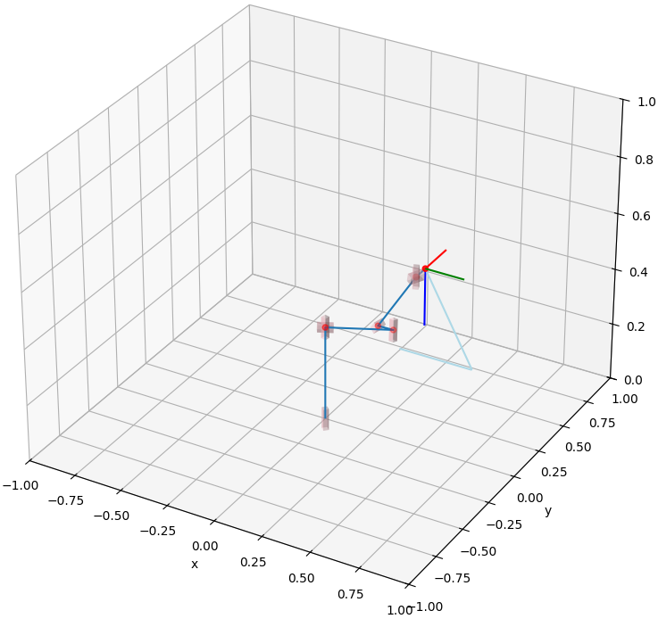

Adaptive Compensation for Robotic Joint Failures
Using Partially Observable Reinforcement Learning
College of Engineering and Science, Florida Institute of Technology, USA
Department of Fundamentals of Machine Design, HCMC University of Technology and Education, Vietnam
Abstract |
Manipulators are widely used in various industries for complex and repetitive tasks, yet they remain vulnerable to unexpected hardware failures.
In this study, we address the challenge of enabling a robotic manipulator to complete tasks despite joint malfunctions.
Specifically, we develop a reinforcement learning (RL) algorithm to compensate for a non-functional joint during task execution adaptively.
Our experimental platform is the Franka robot with 7 degrees of freedom (DOFs).
We formulated the problem as a partially observable RL scenario, in which the robot is trained under various joint failure conditions and tested in both seen and unseen scenarios.
Particularly, we consider scenarios where a joint is permanently broken and where it functions intermittently.
In addition, we demonstrate the effectiveness of our approach by comparing it with traditional inverse kinematics-based control methods.
The results show that the RL algorithm enables the robot to successfully complete the tasks even with joint failures, showcasing its robustness and adaptability.
Our findings highlight the potential of RL to enhance the resilience and reliability of robotic systems, making them better suited for unpredictable environments.
Simulation using isaaclab |
|
(a) The robot successfully opens the cabinet.
|

(b) The robot fails to open the cabinet.
|
|
Inverse Kinematic |
|

(c) The robot works properly.
|
(d) The robot fails to follow the expected trajectory when one of the joints is broken.
|